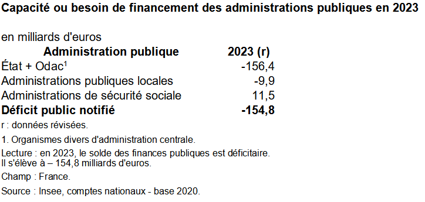
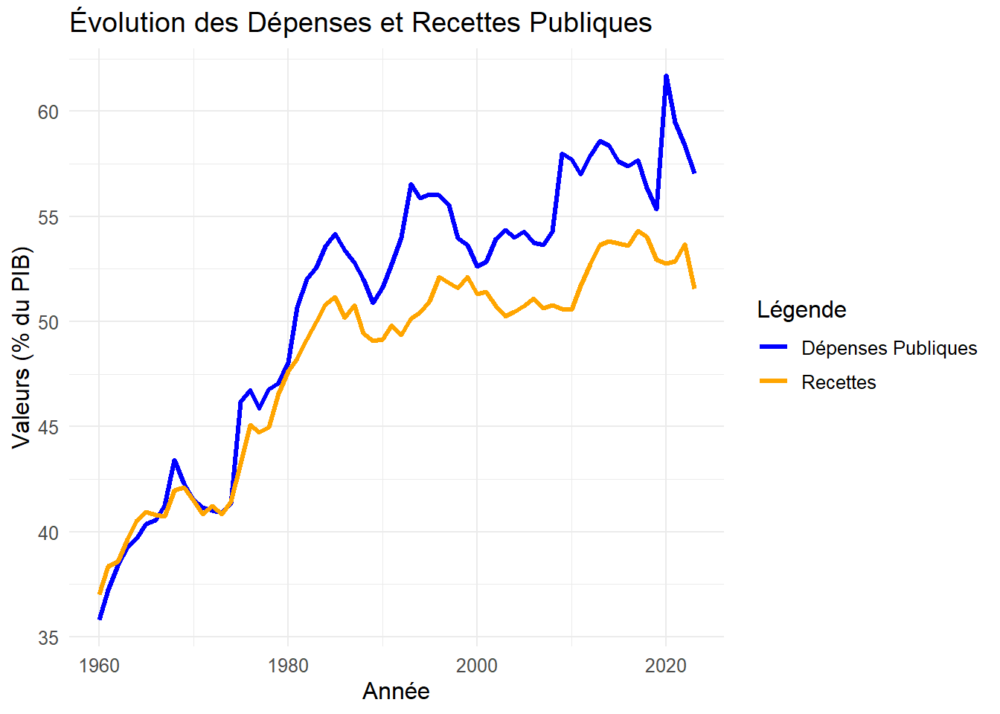
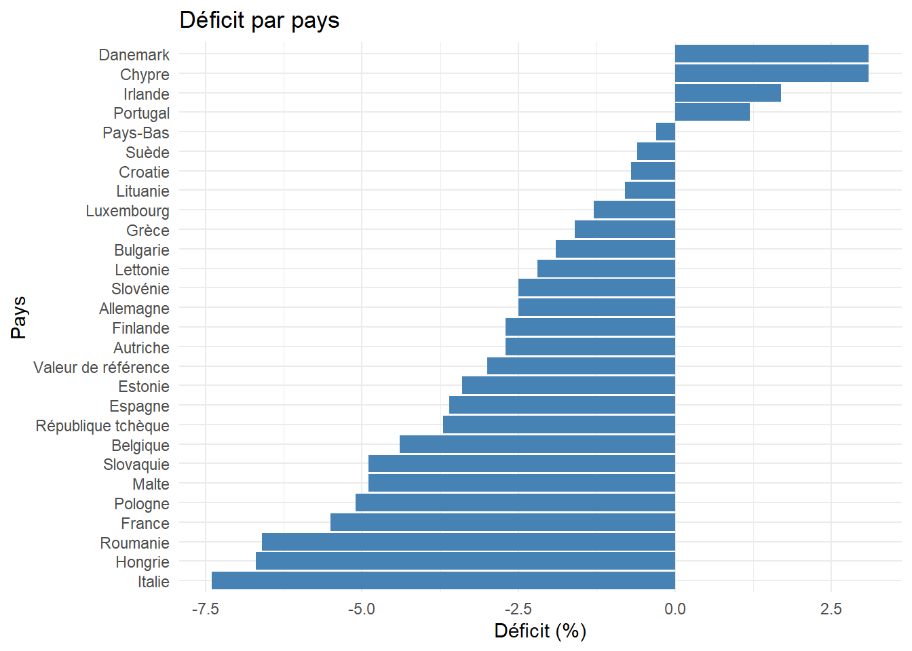

4Chapitre 2: Le cadre institutionnel et le processus budgétaire
4.1 Introduction
La question du budget de l’Etat est au coeur de l’actualité, mais comment est élaboré le budget de l’Etat? Comment a-t-il évolué au cours du temps? Quelles différences entre déficit public et dette publique? Comment est construit le budget dans le cadre des réglementations européennes?
4.2 Le budget de l’Etat
Pour présenter le budget de l’Etat, nous nous référons au site suivant
4.2.1 Les recettes
Les impôts et les taxes (dont TVA)
Show the code
# Charger les bibliothèqueslibrary(readxl)library(ggplot2)library(plotly)# Lire les données depuis le fichier Exceldonnees <-read_excel("donnees.xls")donnees <- donnees[-1,]donnees$Valeur<- donnees$`Évaluations 2024 révisées`# Ajouter une colonne pour le pourcentagedonnees$Pourcentage <-round(donnees$Valeur /sum(donnees$Valeur) *100, 1)# Création du camembert interactif avec plotlyp_interactif <-plot_ly(donnees, labels =~Recette, values =~Valeur, type ="pie",textinfo ="label+percent", hoverinfo ="label+percent+value",marker =list(line =list(color ="#FFFFFF", width =1))) %>%layout(title ="Répartition des Recettes")# Afficher le graphique interactifp_interactif
Source: Ministère de l’Economie, des Finances et de l’Industrie, projet de loi de finances 2025
4.2.2 Les Dépenses
Show the code
depenses <-read_xlsx("depenses.xlsx")depenses$depenses<-depenses$`Dépenses publiques`# Création du camembert interactif avec plotlyp_interactif2 <-plot_ly(depenses, labels =~Structure, values =~depenses, type ="pie",textinfo ="label+percent", hoverinfo ="label+percent+value",marker =list(line =list(color ="#FFFFFF", width =1))) %>%layout(title ="Répartition des Dépenses")# Afficher le graphique interactifp_interactif2

4.2.3 Evolution du solde budgétaire
Show the code
dette <-read_excel("dette.xls")dette$year<-dette$Annéedette$deficit<-dette$`Déficit public notifié`ggplot(dette, aes(x =year, y = deficit)) +geom_line(color ="blue", size =1) +# Courbe bleue pour l'évolution de la variablegeom_hline(yintercept =-3, linetype ="dashed", color ="orange", size =1) +# Ligne horizontale à y = 3scale_y_continuous(limits =c(-10, 2), name ="en % du PIB") +# Limiter l'axe y de -10 à 2 et ajouter un libellélabs(title ="Solde des finances Publiques",x ="Année") +theme_minimal()
4.2.4 Evolution des dépenses et recettes
Show the code
recettes <-read_excel("recettes.xls")# Création du graphique avec ggplot2ggplot(recettes, aes(x = year)) +geom_line(aes(y = Depenses, color ="Dépenses Publiques"), size =1.2) +# Courbe bleuegeom_line(aes(y = Recettes, color ="Recettes"), size =1.2) +# Courbe orangescale_color_manual(values =c("Dépenses Publiques"="blue", "Recettes"="orange")) +# Couleurslabs(title ="Évolution des Dépenses et Recettes Publiques",x ="Année",y ="Valeurs (% du PIB)",color ="Légende") +# Étiquettestheme_minimal() +# Thèmetheme(text =element_text(size =12))

Show the code
deficit_europe <-read_excel("deficit_europe.xls")deficit_europe$deficit<-deficit_europe$`Solde des finances publiques(en % du PIB)`ggplot(deficit_europe, aes(x =reorder(Pays, deficit), y = deficit)) +geom_bar(stat ="identity", fill ="steelblue") +# Barres bleuescoord_flip() +# Inverser les axes pour horizontallabs(title ="Déficit par pays", x ="Pays", y ="Déficit (%)") +theme_minimal()

4.3 Les règles qui régissent le budget de l’Etat
4.3.1 Les principes budgétaires
Citation
le budget doit répondre à plusieurs principes budgétaires comme l’universalité, l’unité, la spécialité et l’annualité.
L’universalité budgétaire de l’État, signifie que, normalement — sauf pour quelques exceptions —, toutes les recettes doivent alimenter le budget de l’État sans être affectées à une dépense précise. C’est un grand pot commun qui permet d’alimenter toutes les politiques publiques sans distinction.
Le budget de l’État doit aussi être présenté dans un document unique avec toutes les dépenses et toutes les recettes. Ce document doit être le plus exhaustif possible. C’est un enjeu de lisibilité et de transparence pour les citoyens et pour permettre au Parlement, qui va ensuite voter ce texte, de travailler efficacement.
Le budget doit également détailler l’autorisation des crédits par destination, c’est-à-dire qu’une dépense va être prévue dans un but défini, c’est le principe de spécialité.
Le dernier principe, c’est l’annualité. Chaque année, on détermine les recettes et les dépenses pour une année. Le budget tient compte, bien sûr, du fait que certaines politiques publiques sont pluriannuelles. Mais on fait en sorte que chaque année, on puisse faire de la justification au premier euro, c’est-à-dire que chaque dépense puisse être justifiée annuellement.
4.3.2 Les règles européennes
Le traité de Maastricht prévoit deux critères de convergence:
Une limitation du déficit public < 3% du PIB
Un plafonnement de la dette publique, qui ne doit pas excéder 60% du PIB
Débat
Donnez des arguments Pour et Contre une discipline budgétaire suivant ces critères définis.